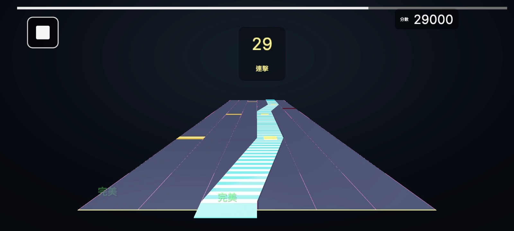
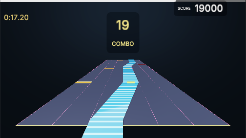
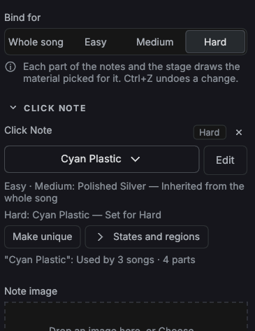
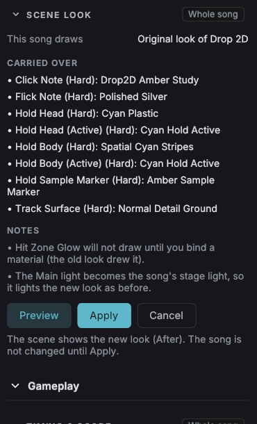
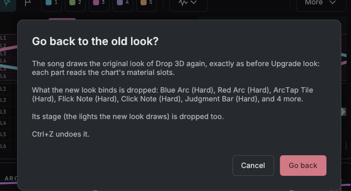
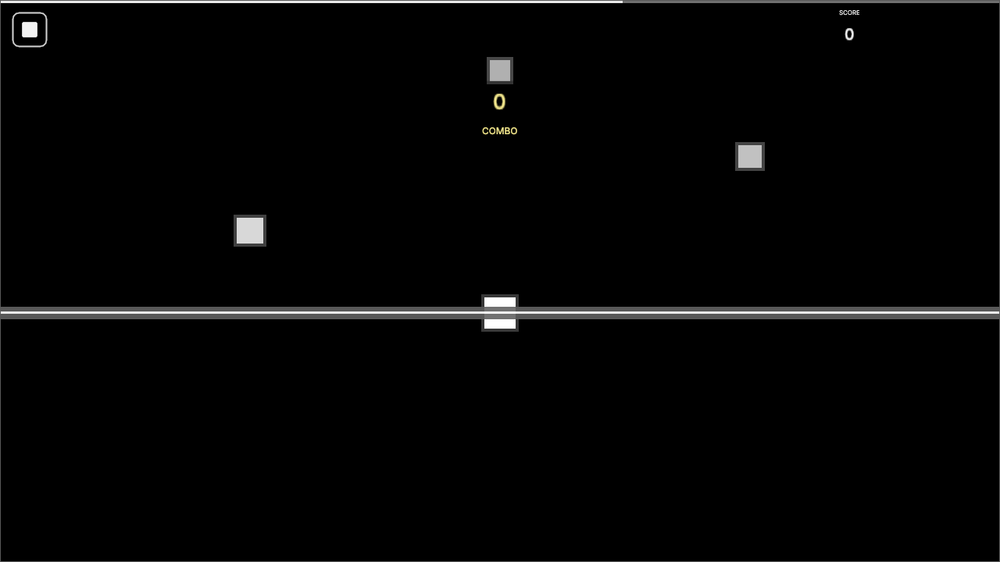

二维下落的跨轨长按（cross-lane hold）
在 Drop 2D Studio 的困难谱（Hard）中，一条长按在第 16–21 秒经过三条轨道。早期版本的音符头停在起始轨。修复后，按住的头部与长按路径在判定线上的交点共用同一横坐标。Windows 与 Galaxy S21 的定时回放验证了两次换轨，手机输入回放还命中了四个中间采样点和尾部。
用 C++20 和 Vulkan 构建的音游引擎（rhythm game engine）。作者在 Windows 谱面编辑器（chart editor）中制作歌曲，在 Android 播放器（player）中游玩。


歌曲第 16–21 秒，条纹沿着长按主体（hold body）移动，音符跨过从左第三、第四、第五轨（谱面轨号 2、3、4）。
播放有声演示 全长 19 秒，第 9 秒起是 S21 画面与设备原声。前三个镜头来自演示副本的歌曲编辑器（Song Editor）。困难难度（Hard）为普通和激活状态的长按主体指定青色能量条纹（Energy Stripes Cyan）。手机上的 R13d 构建从歌曲层继承同一组材质。已安装的安卓应用包（Android application package，APK）中，Hard 谱面和项目自制的 24 秒合成音源 studio.wav 都与工程文件逐字节一致。
手机连续录屏使用自动游玩（autoplay），声音来自设备的数字立体声输出（digital stereo output）。按游戏信息叠层（head-up display，HUD）的进度条对齐约 17.2 秒的抓帧。下方另存的 9 秒旧帧展示较早的直线段。

三月的第一人称工程日志写明，大部分代码由作者指导的 AI 编程助手（AI coding agents）生成。作者描述了自己选择架构、拆解子系统、定义接口和不变量（invariants）、审查实现，以及定位助手漏掉的错误的过程。下文的实验结果归属于项目。正式申请所用的个人职责、本人编写的代码和各项具体贡献仍由作者逐项确认。
图形学工程（graphics engineering）
同一条材质程序（material program）要服务于长按、地面、圆盘等不同几何体。工程记录包含三类验证。检查光照公式的数值，比较实际音符的帧图像，再到手机上测量带宽和耗时。后续是否启用某个效果，由这些结果和设备预算共同决定。


11 月 11 日在同一台 S21 以相同素材交替对照。120 Hz 下，四种玩法三轮测量中最慢一轮的 GPU 第 95 百分位（p95）为 5.58 毫秒，每轮均满足 6.50 毫秒预算。系统合成器（SurfaceFlinger）记录的 34,575 个实际上屏间隔中仍有 11 次超过 1.5 个刷新周期，60 Hz 下是 0 / 17,288。GPU 计时与屏幕呈现各自回答一个问题。
二维下落缓存稳定的轨道着色（track shading cache），降低着色时间的代价是固定帧外部读取从 85.4 增至 550.2 MiB/s。扫描线的卡通材质改在分块内合成（tile-local composition），固定帧外部读取从 2,461.0 降到 86.1 MiB/s。每个数据点都有独立的版本、场景和测量单位。
追踪一次漏刷，从游戏交帧到屏幕显示查看 11 月 19 日复核记录2026.11.19
Scan Shape Study 把六个点击音符（tap notes）放在同一时刻，从左到右依次为方形、圆形、三角形、菱形、星形与正六边形。它们都在歌曲第 9 秒接受相同的时间判定（timing judgment）。右起第二个星形使用 Shape Study Ink 材质（material），图像围绕纹理中心旋转 30°。
在 Drop 2D Studio 的困难谱（Hard）中，一条长按在第 16–21 秒经过三条轨道。早期版本的音符头停在起始轨。修复后，按住的头部与长按路径在判定线上的交点共用同一横坐标。Windows 与 Galaxy S21 的定时回放验证了两次换轨，手机输入回放还命中了四个中间采样点和尾部。
本次 120 Hz 复测有 9/9 次长间隔定位到系统合成与显示环节。 游戏已提交这张画面，GPU 比上一张上屏早 9.38–12.76 毫秒完成。Android 合成器（SurfaceFlinger）在目标刷新前接收了缓冲，同一个显示帧记录到合成器 CPU 错过截止时间（CPU deadline missed）。
同一台 S21 使用与展示版相同的 64 位引擎，关闭引擎 GPU 计时探针，四首困难谱共播放 24 次。两种采集方式都追踪游戏缓冲和显示帧，其中一组同时轮询系统上屏记录。120 Hz 的漏刷门槛为 12.50 毫秒，60 Hz 为 25.00 毫秒。
| 刷新率 | 采集方式 | 完整播放 | 长间隔 / 全部间隔 |
|---|---|---|---|
| 120 Hz | 同步轮询（latency polling） | 8 | 4 / 23,048 |
| 120 Hz | 仅追踪（trace only） | 12 | 5 / 34,591 |
| 60 Hz | 仅追踪（trace only） | 4 | 0 / 5,763 |
| 事件 | 相对时刻 |
|---|---|
| 游戏提交缓冲（queue） | −12.67 ms |
| GPU 完成（acquire fence） | −9.39 ms |
| 上一张画面上屏 | 0.00 ms |
| 合成器接收该缓冲（latch） | +3.35 ms |
| 系统计划上屏（expected present） | +8.35 ms |
| 本次合成调用返回（composite） | +10.32 ms |
| 这张画面实际上屏（present fence） | +16.68 ms |
两个连续的游戏缓冲之间没有其他显示帧结束。预计上屏与实际上屏相差约一个刷新周期。系统记录可以确定延误发生在交帧之后，进一步区分调度、厂商驱动和显示硬件仍需更细的系统记录。
回看 11 月 11 日的 11 次漏刷，下一张图的 GPU 就绪时间均比上一张上屏早 10.20–12.96 毫秒。旧版圆盘首次创建管线是另一种表现：一次 75.22 毫秒的长间隔中，下一张图直到上一张上屏后 60.86 毫秒才就绪。这项引擎卡顿已通过预热解决。旧对照版另有一次扫描线样本缺少入队和接收时间，保留为未定。
工程档案（engineering casebook）
按领域或术语查找案例。每一项都写明情境（Situation）、任务（Task）、行动（Action）、结果（Result）与复盘（Reflection）。
系统架构
同一份谱面（chart）、音源、材质绑定（material bindings）和玩家配置保存在项目中。桌面试玩（Test Game）直接打开项目，安卓打包器（APK packager）则沿引用收集资源。两端共用谱面时钟（chart clock）、判定（judgment）和玩家视图（player views）。
材质创作与兼容（material authoring & compatibility）
作者可在困难难度（Hard）覆盖歌曲的长按主体材质（hold-body material）。未指定时先继承歌曲绑定（song binding），再取引擎默认值。编辑器把作者的着色函数嵌入 GLSL 着色器（shader），编译和校验后将 SPIR-V 中间表示（intermediate representation）随 APK 交付。着色器结合歌曲时间（song time）和路径坐标（path coordinates），让条纹沿弯折移动。

 素色（Plain）
能量条纹（Energy Stripes）
素色（Plain）
能量条纹（Energy Stripes）


拐弯处的条纹要在实际音符上检查。旧歌可以先预览外观升级，再回退（rollback）。36 张新外观回归抓帧（regression captures）各自与旧外观参考配对，记录的判定锚点（hit anchors）位置差均为 0 像素。



绑定（binding）指向部件，还可指定激活状态和区域。绑定解析器（binding resolver）记录显式值（explicit）、继承值（inherited）或默认值（default）。旧歌曲从旧渲染路径进入。升级时可预览保留的绑定，已测的回退可恢复原谱面和配置。信息叠层（HUD）的字形边缘另有像素容差（pixel tolerance）。
· ·移动图形处理器（GPU）· 受控实验（controlled experiment）
2400 × 1080 的高动态范围图像（high dynamic range，HDR）使用四通道半精度格式（RGBA16F），单张约 20.7 MB。旧路径把整张图写到外部内存，又读回来做显示转换（display conversion）。分块内渲染（tile-local rendering）让转换直接读取同一个 GPU 分块的颜色。游戏信息叠层（HUD）随后单独绘制。
 原路径（baseline） · 119.5 FPS
分块内（tile-local） · 119.5 FPS
原路径（baseline） · 119.5 FPS
分块内（tile-local） · 119.5 FPS
在这组 S21 固定场景、GPU 未锁频的实验中，外部读写带宽从 5.13 降到 0.33 GB/s，约减少 93.6%。颠倒运行次序后结果可重复。本实验测的是这一帧的带宽，续航需要另测。
| # | 渲染路径（path） | GPU 忙碌率（GPU busy） | 平均频率（MHz） | 帧率（FPS） | 外部读取（read） | 外部写入（write） | 读写合计 |
|---|---|---|---|---|---|---|---|
| 1 | 原路径（baseline） | 76.9% | 152 | 119.5 | 2.5916 | 2.5399 | 5.1315 |
| 2 | 分块内（tile-local） | 53.9% | 130 | 119.5 | 0.1098 | 0.2203 | 0.3301 |
| 3 | 分块内（tile-local） | 54.1% | 130 | 119.4 | 0.1082 | 0.2195 | 0.3277 |
| 4 | 原路径（baseline） | 78.0% | 165 | 119.4 | 2.5889 | 2.5386 | 5.1275 |
Galaxy S21，Android 15，120 Hz。歌曲时间固定为 1.3 秒，界面和着色器时钟（shader clock）固定为 1 秒。HWCPipe 硬件计数器（hardware counters）每 200 毫秒采样一次。显示表面旋转 90° 时，2,592,000 个像素中有 225 个不同，其中 3 个相差超过两个色阶。四个窗口均未错过垂直同步（vertical sync，VSync）。
·游戏运行时（game runtime）· 时序（timing）
谱面（chart）给每个音符（note）规定时间和位置。扫描线（Scan Line）经过音符时，玩家应当点击。Ba 的困难难度谱在 106.65 秒从每分钟 89.6 拍变为 134.8 拍（beats per minute，BPM），旧运行时仍使用开头的速度。
 671–673
401
671–673
401

两图都是 Windows 桌面试玩（Test Game）固定在 107.32 秒的抓帧。修复让编辑器和运行时从相同的速度变化和逐页设置构建分页时间表（page schedule）。
固定时钟，分辨率 1280 × 720。音符的归一化纵坐标（normalised y coordinate）为 0.556，旧扫描线则为 0.934。轮廓框是网页标注，点击任一张图可打开原帧。
·Android · 资源生命周期（resource lifetime）


错误封面是纹理生命周期（texture lifetime）失效的可见症状。另一条证据来自暂停页崩溃栈，它指向描述符复用（descriptor reuse）。新图像视图（image view）可能拿到与旧对象相同的句柄值（handle value）。
·| 玩法（mode） | GPU 耗时第 95 百分位（p95，毫秒） | 平均频率（MHz） | 帧率（FPS） |
|---|---|---|---|
| 二维下落（Drop 2D） | 7.48 | 139 | 120.0 |
| 三维下落（Drop 3D） | 6.20 | 130 | 120.0 |
| 圆盘（Circle） | 4.75 | 130 | 120.0 |
| 扫描线（Scan Line） | 8.63 | 166 | 120.0 |
困难难度（Hard），固定在歌曲第 9 秒，测量约 15.6 秒。每 240 帧计算一次 GPU 耗时的第 95 百分位（95th percentile，p95），表中取这些结果的中位数。项目以最低 130 MHz 运行时的 6.5 毫秒为预算。二维下落和扫描线都达到了刷新率（refresh rate），但仍超出这项 GPU 预算。
上表记录 10 月 28 日的固定帧。11 月 11 日的同资产实机复测采用新的候选构建。比较十一月的 GPU 时间与实际上屏间隔。